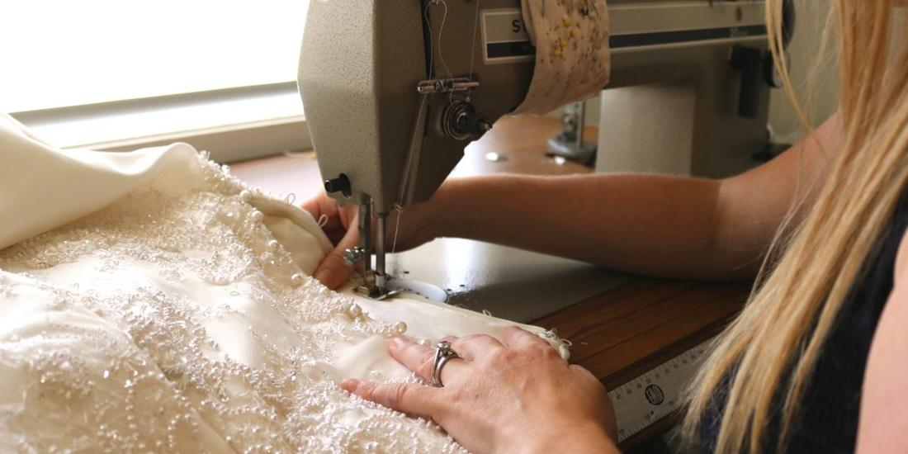

Choosing the right fabric is one of the most exciting and transformative stages of creating your bridal gown. The weight, sheen, and hand-feel of your fabric determine how your dress drapes over your silhouette, catches soft natural light, and moves when you walk.
Popular Bridal Fabrics & How They Behave
Here are several of the most timeless fabrics we work with at our Berwick atelier, and how they contribute to different bridal silhouettes.
Chiffon
A classic bridal material, chiffon is an ultra-sheer, lightweight fabric that offers a soft, floating drape. Because chiffon has a matte finish without heavy sheen, it is a favourite for brides who adore understated elegance. Its delicate fluidity makes it ideal for ethereal skirts, flutter sleeves, and romantic overlays, especially in minimal wedding dress designs.
Silk Satin
Satin-finish fabrics offer a rich, lustrous surface with substantial weight and luxurious drape. Woven from fine silk fibres, satin provides the structure necessary for sculpted corsetry, architectural folds, and clean lines. If you are envisioning a structured bodice with a statuesque skirt, satin remains an enduring choice.
French & Embroidered Lace
Lace introduces delicate texture, depth, and artisanal detail. From fine Chantilly and corded Alençon to tactile guipure, lace can be placed as sheer illusion sleeves, layered over opaque silks, or hand-appliquéd onto bodices and trains. For brides who cherish heritage details, explore our guide on vintage-inspired wedding dresses.
Tulle
Synonymous with romance, airy tulle is a fine netting that builds soft volume without adding excess weight. Tulle is the premier choice for custom bridal veils, blusher layers, and sweeping ball gown skirts that feel light and effortless to dance in.
Organza
Organza is sheer and crisp with a delicate natural stiffness. It holds body and structure far more firmly than chiffon, making it wonderful for dimensional pleating, dramatic bows, and skirts that hold clean sculptural forms while remaining featherlight.
Silk Charmeuse & Crepe
Charmeuse and silk crepe are celebrated for their supple, body-skimming drape and fluid movement. Ideal for column skirts, cowl necklines, and relaxed silhouettes, these fabrics offer quiet sophistication and unmatched comfort for warm summer weddings and outdoor celebrations. Learn more about matching fabric to your figure in our guide to wedding dress silhouettes.

Written by Bryony Jayne Reardon
Founder and bridal couture dressmaker at Bryony Jayne Bridal Couture in Berwick, Melbourne. Helping Victorian brides create custom wedding dresses since 2013.